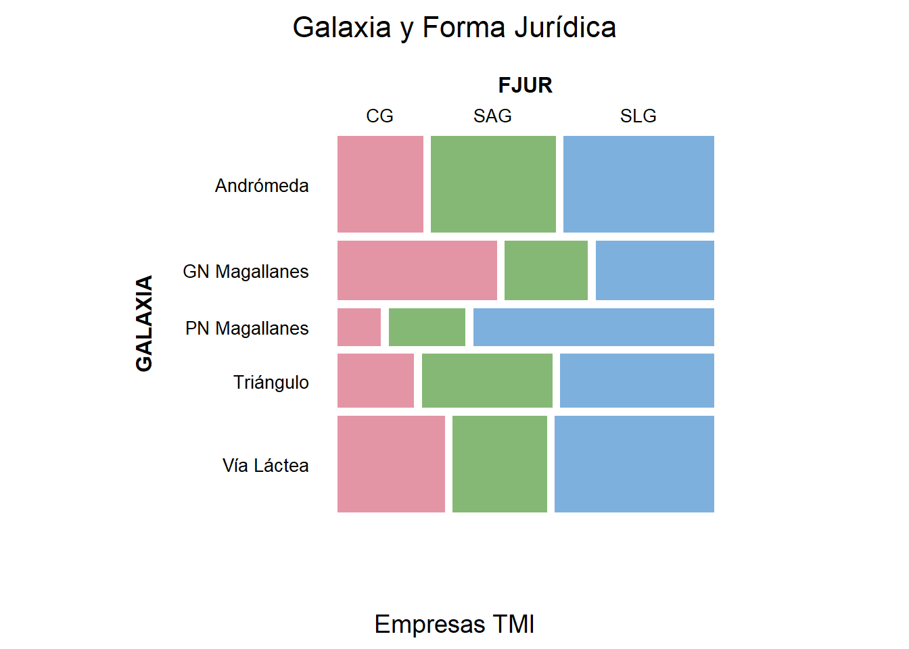
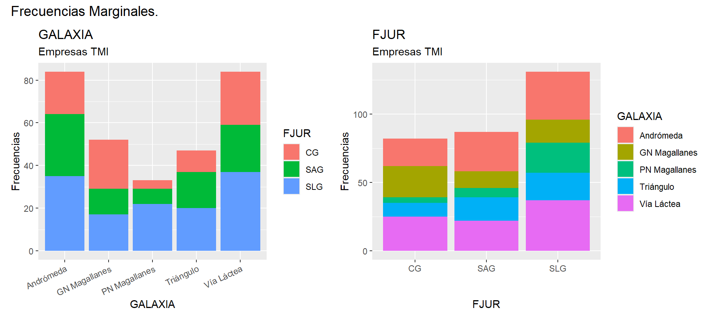
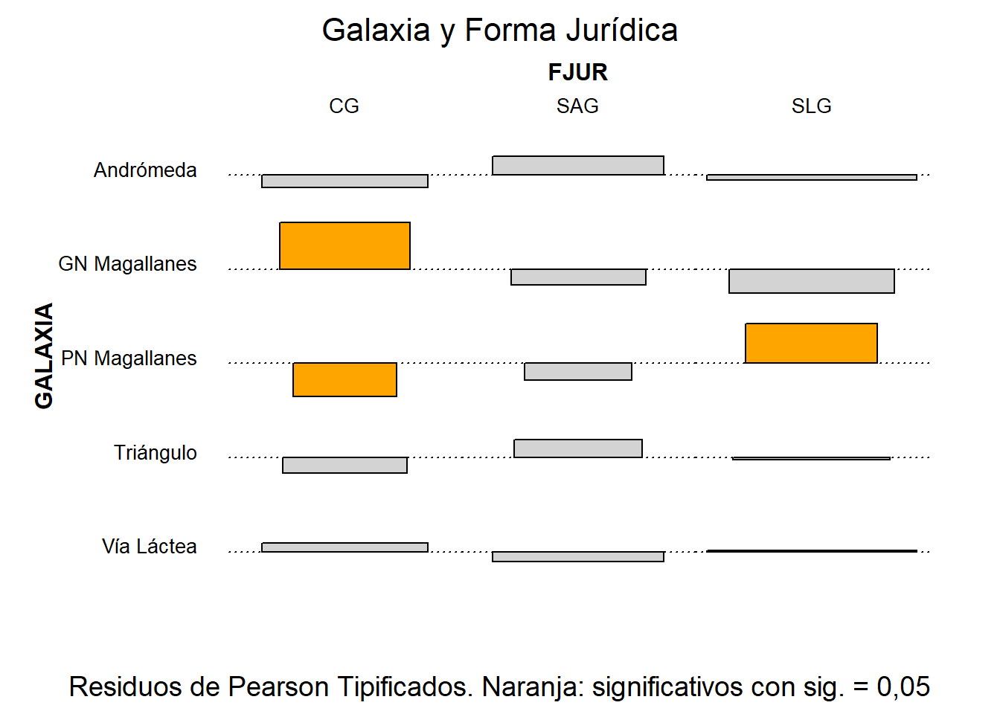
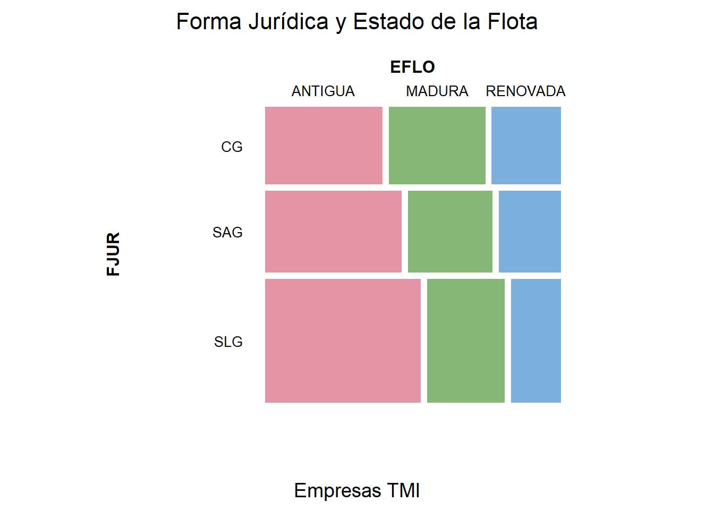
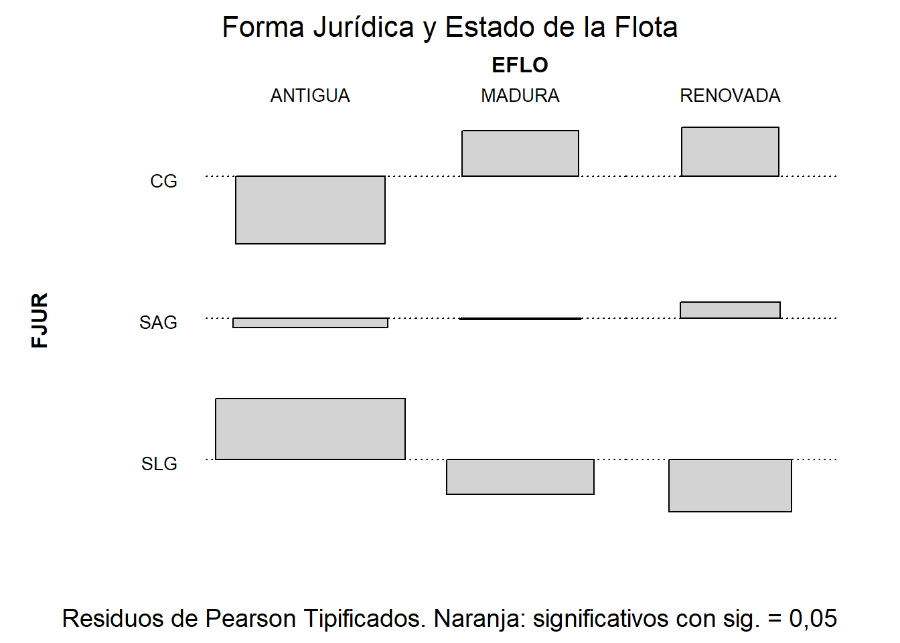

7 Tablas de contingencia.

Figura 7.1. Galaxias que recorrer…
7.1  Introducción.
Introducción.
En numerosas ocasiones los datos con los que el analista debe enfrentarse son de naturaleza cualitativa, esto es, la información se recoge en características de los individuos no numéricas o atributos (o factores o variables categóricas o cualitativas). Cuando ocurre esto, es necesario recurrir a técnicas de explotación específicas para este tipo de datos.
En estos casos, la información suele sintetizarse y presentarse mediante las denominadas tablas de contingencia. En este tipo de tablas, se muestran las frecuencias conjuntas, es decir, el número de casos que comparten los distintos niveles o categorías de los diferentes factores.
Cuando se trabaja con varios factores o atributos, representados en su correspondiente tabla de contingencia, uno de los análisis más interesantes es determinar si existe asociación entre los factores o atributos, es decir, si se aprecia algún tipo de relación estadística entre estas variables categóricas, en el sentido de si se puede afirmar que el hecho de que los casos de la muestra tomen ciertos niveles o categorías en unos factores hace que estos mismos casos tiendan a tomar ciertos niveles o categorías de otro u otros factores.
7.2 Asociación entre dos atributos: la prueba ji-cuadrado.
Existen diferentes pruebas para verificar la posible existencia de asociación entre dos factores. La más habitual es el contraste o prueba de asociación de Pearson. Este contraste se basa en un estadístico que, bajo la hipótesis nula de que no existe asociación, sigue una distribución ji-cuadrado. El estadístico es, en realidad, una medida global de lo distante que está la tabla de contingencia observada (sus frecuencias conjuntas) respecto a la estructura “ideal” que tendría que tener si existiera independencia “total” entre ambos atributos:
\[ \chi^2 = \sum_{i=1}^{r} \sum_{j=1}^{c} \frac{(n_{ij} - E_{ij})^2}{E_{ij}} \]
donde:
\(n_{ij}\) es la frecuencia observada en la celda \((i, j)\).
\(E_{ij}\) es la frecuencia esperada en la celda \((i, j)\) bajo independencia, calculada como \(E_{ij} = \frac{R_i \cdot C_j}{N}\).
\(R_i\) es el total de la fila \(i\), \(C_j\) el total de la columna \(j\), y \(N\) el total general de observaciones.
En este contraste, la hipótesis nula \((H_0)\) establece que no existe asociación entre las dos variables categóricas, es decir, que son estadísticamente independientes. La hipótesis alternativa \((H_1)\) plantea que sí existe asociación, de modo que la distribución conjunta difiere significativamente de la esperada. El estadístico tiene \((r-1)(c-1)\) grados de libertad, siendo \(r\) y \(c\) el número de filas y columnas de la tabla.
Si se rechaza la independencia, conviene saber qué celdas son las responsables. Para ello se emplean los residuos estandarizados ajustados, que miden la desviación de cada frecuencia observada respecto a la esperada:
\[ r_{ij} = \frac{n_{ij} - E_{ij}}{\sqrt{E_{ij} \left(1 - \frac{R_i}{N}\right) \left(1 - \frac{C_j}{N}\right)}} \]
Como se distribuyen aproximadamente según una normal estándar, los residuos con valor absoluto superior a 1,96 indican celdas que se desvían significativamente (al 5 %) de lo esperado bajo independencia: un residuo positivo señala que esa combinación de categorías aparece más de lo esperado, y uno negativo, menos.
7.3 Medidas de asociación.
La prueba ji-cuadrado responde a la pregunta de si existe asociación, pero no a la de cuán intensa es. El valor del estadístico \(\chi^2\) no sirve para medir la intensidad, porque crece con el tamaño de la muestra: con muchos casos, asociaciones muy débiles resultan significativas. Para medir la intensidad se utilizan los coeficientes de asociación, que relativizan el \(\chi^2\) y toman valores entre 0 (independencia) y, como máximo, 1:
- Coeficiente de contingencia de Pearson (C):
\[ C = \sqrt{\frac{\chi^2}{\chi^2 + N}} \]
Su inconveniente es que no alcanza el valor 1 ni siquiera con asociación perfecta: su máximo depende del tamaño de la tabla, \(C_{\max} = \sqrt{\frac{k-1}{k}}\), siendo \(k\) el menor entre el número de filas y de columnas. Por eso suele calcularse también el coeficiente de contingencia corregido, \(C / C_{\max}\), que sí puede llegar a 1.
- V de Cramér:
\[ V = \sqrt{\frac{\chi^2}{N\,(k-1)}} \]
Es la medida más utilizada, porque varía entre 0 y 1 con independencia del tamaño de la tabla, lo que permite comparar tablas distintas. Como orientación, valores de V por debajo de 0,1 suelen considerarse una asociación despreciable; entre 0,1 y 0,3, débil; entre 0,3 y 0,5, moderada; y por encima de 0,5, fuerte.
- Coeficiente Phi (\(\phi = \sqrt{\chi^2 / N}\)): solo tiene sentido en tablas de 2 × 2, en las que coincide con la V de Cramér.
Conviene leer siempre conjuntamente el contraste y las medidas: el contraste dice si la asociación es estadísticamente distinguible del azar; las medidas, si es relevante en la práctica.
7.4  Práctica: el entramado comercial del cosmos.
Práctica: el entramado comercial del cosmos.
7.4.1  El encargo.
El encargo.
En el inmenso mapa del espacio conocido, las distintas galaxias no solo se distinguen por la luz de sus estrellas, sino también por la forma en que sus habitantes organizan el comercio, la política y la vida empresarial. Las naves que surcan los corredores hiperespaciales transportan minerales, piezas de ingeniería cuántica, alimentos sintéticos y cualquier cosa que pueda venderse entre sistemas planetarios. Pero detrás de cada nave hay una empresa, y detrás de cada empresa, una historia.
El presente análisis forma parte de un informe solicitado por la Agencia Interplanetaria de Transporte de Mercancías, preocupada por comprender cómo ciertos factores estructurales influyen en la operativa y organización de las empresas de transporte interestelar. En concreto, se plantean dos cuestiones:
Si la galaxia donde opera la sede de las empresas (GALAXIA) influye en su forma jurídica (FJUR).
Si el estado de renovación de la flota (EFLO) depende de la forma jurídica.
7.4.2 Preparación de los datos.
Necesitamos en la carpeta del proyecto el archivo de datos interestelar_300.xlsx, con información de 300 empresas dedicadas a los servicios de transporte interestelar de mercancías, y el script contingencia_lite.R. Importamos los datos y seleccionamos los tres atributos del análisis:
# Limpiando el Global Environment
rm(list = ls())
# Cargando el paquete de la asignatura
library(MATlite)
# Importando datos y seleccionando los atributos del análisis
interestelar_300 <- lite_importa("interestelar_300.xlsx")
seleccion <- interestelar_300 %>% select(GALAXIA, FJUR, EFLO)
lite_resumen(seleccion)| seleccion | ||||||
| 300 rows x 3 cols | ||||||
| Column | Plot Overview | Missing | Mean | Median | SD | |
|---|---|---|---|---|---|---|
GALAXIAGalaxia de Andrómeda, Vía Láctea, Gran Nube de Magallanes, Galaxia del Triángulo and Pequeña Nube de Magallanes |
0.0% | — | — | — | ||
FJURSLG, SAG and CG |
0.0% | — | — | — | ||
EFLOANTIGUA, MADURA and RENOVADA |
0.0% | — | — | — | ||
Tabla 7.1
Comprobamos la existencia de missing values y, como los nombres de las galaxias son muy largos (lo que dificultaría la lectura de tablas y gráficos), los abreviamos con la función lite_recodifica(). Basta con indicarle la variable y una lista de cambios con la forma "nombre antiguo" = "nombre nuevo"; las categorías que no se mencionan (aquí, “Vía Láctea”) se mantienen tal cual:
seleccion <- lite_na(seleccion, accion = "eliminar",
titulo = "Tablas de contingencia.",
subtitulo = "Transporte de mercancías interestelar")
seleccion <- lite_recodifica(seleccion, GALAXIA,
c("Gran Nube de Magallanes" = "GN Magallanes",
"Pequeña Nube de Magallanes" = "PN Magallanes",
"Galaxia de Andrómeda" = "Andrómeda",
"Galaxia del Triángulo" = "Triángulo"))## GALAXIA: 216 casos recodificados. Categorías: Andrómeda, GN Magallanes, PN Magallanes, Triángulo, Vía Láctea.No se ha localizado ninguna observación con missing values, luego no se ha de realizar ningún tipo de tratamiento.
7.4.3 La sospecha institucional (GALAXIA × FJUR).
En el sector del transporte interestelar existe la percepción generalizada de que las condiciones institucionales y regulatorias de cada galaxia influyen en la forma en que las empresas se constituyen jurídicamente. La Vía Láctea, con un marco fiscal estable y maduro, tiende a favorecer sociedades mercantiles de gran tamaño, mientras que otras galaxias, como la Gran y la Pequeña Nube de Magallanes, han desarrollado sistemas legales más flexibles o con incentivos específicos para determinadas estructuras empresariales. Esta heterogeneidad normativa sugiere que la elección de la forma jurídica (FJUR) podría estar condicionada por la galaxia de operación (GALAXIA), lo cual justifica el análisis estadístico de su posible asociación.
Todo el análisis lo realiza la función lite_contingencia(), a la que indicamos el data frame, el atributo que irá en las filas, el que irá en las columnas y, opcionalmente, un título y subtítulo para los gráficos:
galaxia_fjur <- lite_contingencia(seleccion, GALAXIA, FJUR,
titulo = "Galaxia y Forma Jurídica",
subtitulo = "Empresas TMI")## Contraste ji-cuadrado: χ² = 18.209, g.l. = 8, p-valor = 0.01971. Se rechaza H0 (independencia) al 5 %.La función adelanta en la consola el resultado del contraste. Vamos a examinar sus piezas una a una, comenzando por la tabla de contingencia, con las frecuencias marginales (sumas de filas y columnas):
galaxia_fjur$tabla| CG | SAG | SLG | Sum | |
|---|---|---|---|---|
| Andrómeda | 20 | 29 | 35 | 84 |
| GN Magallanes | 23 | 12 | 17 | 52 |
| PN Magallanes | 4 | 7 | 22 | 33 |
| Triángulo | 10 | 17 | 20 | 47 |
| Vía Láctea | 25 | 22 | 37 | 84 |
| Sum | 82 | 87 | 131 | 300 |
Tabla 7.2
La tabla de contingencia muestra cómo se distribuyen las formas jurídicas de las empresas (CG, SAG y SLG) en cada galaxia del estudio. Se observa que Andrómeda y Vía Láctea son las que concentran el mayor número de compañías (84 cada una), mientras que PN Magallanes es la menos representada. La forma jurídica SLG es la más frecuente en el conjunto del sector y también dentro de cada galaxia, con una excepción llamativa: en GN Magallanes la forma dominante es CG (23 empresas, frente a 17 SLG). El predominio de las SLG es, en cambio, especialmente acusado en PN Magallanes, donde representa dos tercios de las empresas. En conjunto, la tabla sugiere posibles diferencias estructurales entre galaxias, lo que motiva la necesidad de un análisis formal de asociación.
La tabla también se puede representar gráficamente mediante un gráfico de mosaico, con lo que se percibirá mejor la magnitud de las frecuencias conjuntas. A mayor frecuencia, mayor área del rectángulo correspondiente:
galaxia_fjur$mosaico
Figura 7.2
Cada fila del mosaico corresponde a una galaxia y su anchura refleja el número total de empresas que operan en ella; dentro de cada fila, las columnas representan las formas jurídicas (CG, SAG y SLG) en proporción a su frecuencia dentro de esa galaxia. Puede verse, por ejemplo, que Andrómeda y la Vía Láctea albergan un mayor número total de empresas, y que en la mayoría de galaxias predominan las SLG. La disposición y el tamaño de los rectángulos facilitan comparar visualmente cómo varía la composición jurídica entre galaxias.
Otro modo de visualizar la estructura de la tabla es mediante gráficos de barras que muestren las frecuencias marginales de cada atributo, diferenciando en cada barra los casos que pertenecen a las categorías del otro:
galaxia_fjur$barras
Figura 7.3
En el gráfico de la izquierda se observa cuántas empresas operan en cada galaxia, con las barras apiladas según su forma jurídica. En el de la derecha se muestra la distribución inversa: las frecuencias de cada forma jurídica, apiladas según la galaxia. Las SLG son la forma jurídica más habitual en el conjunto del sector, y las galaxias contribuyen en proporciones diferentes a cada forma, lo que refuerza visualmente la idea de posibles diferencias estructurales.
Pasamos ahora a la cuestión central: ¿existe asociación entre ambos atributos? La pieza chi2 recoge la prueba de asociación de Pearson:
galaxia_fjur$chi2| Contraste | χ² | g.l. | p-valor | Decisión |
|---|---|---|---|---|
| Ji-cuadrado de Pearson | 18.209 | 8 | 0.0197 | Se rechaza H0 (independencia) al 5 % |
Tabla 7.3
El resultado de la prueba ofrece un estadístico \(\chi^2\) = 18,209 con 8 grados de libertad y un p-valor de 0,0197, inferior al nivel habitual de significación del 5 %. Esto implica que rechazamos la hipótesis nula de independencia entre GALAXIA y FJUR. En consecuencia, concluimos que sí existe evidencia estadística de asociación entre la galaxia donde se sitúa la sede de la empresa y su forma jurídica.
Si tenemos curiosidad por saber cuáles serían las frecuencias de la tabla en caso de independencia total, galaxia_fjur$esperadas las muestra. Para saber qué celdas son responsables de la asociación, examinamos los residuos estandarizados ajustados; las celdas significativas aparecen resaltadas en naranja:
galaxia_fjur$residuos| CG | SAG | SLG | |
|---|---|---|---|
| Andrómeda | -0.85 | 1.31 | -0.44 |
| GN Magallanes | 3.01 | -1.04 | -1.75 |
| PN Magallanes | -2.08 | -1.05 | 2.82 |
| Triángulo | -1.01 | 1.18 | -0.17 |
| Vía Láctea | 0.59 | -0.67 | 0.08 |
Tabla 7.4
La misma información se ofrece de forma gráfica en el gráfico de asociación, en el que cada barra representa el residuo de una celda: hacia arriba si la combinación aparece más de lo esperado, hacia abajo si aparece menos, y coloreada en naranja si la desviación es significativa:
galaxia_fjur$asociacion
Figura 7.4
Solo unas pocas celdas muestran desviaciones significativas: CG en la Gran Nube de Magallanes (más compañías de las esperadas), y CG (menos de las esperadas) y SLG (más) en la Pequeña Nube de Magallanes. Estos resultados confirman que la distribución de formas jurídicas no es uniforme entre galaxias, tal como apuntaba la prueba ji-cuadrado: ciertas galaxias albergan un número inusualmente alto o bajo de determinadas formas jurídicas, lo que sugiere diferencias reales en los entornos institucionales, normativos o económicos de cada galaxia.
Por último, ¿es intensa esta asociación? Lo dicen las medidas de asociación:
galaxia_fjur$medidas| Medida | Valor |
|---|---|
| Coeficiente de contingencia C | 0.239 |
| C máximo posible en esta tabla | 0.816 |
| C corregido (C / C máximo) | 0.293 |
| V de Cramér | 0.174 |
Tabla 7.5
El coeficiente de contingencia vale 0,239. Como la tabla tiene 3 columnas, su valor máximo posible es 0,816, de modo que el coeficiente corregido es 0,293. La V de Cramér, de 0,174, indica una asociación débil. La lectura conjunta es, pues, que la galaxia y la forma jurídica están asociadas de forma estadísticamente significativa, pero que esa asociación es de intensidad modesta: se concentra en unas pocas combinaciones de categorías (las dos Nubes de Magallanes), mientras que en el resto de galaxias la composición jurídica es bastante parecida.
7.4.4 ¿Se refleja la estructura jurídica en la renovación de la flota? (FJUR × EFLO).
En la segunda fase de la investigación se examina si el estado de la flota de las empresas (EFLO) —renovada, madura o antigua— presenta alguna relación sistemática con su forma jurídica (FJUR). Aunque las estructuras legales pueden variar entre empresas, el mantenimiento y renovación de las flotas suele estar condicionado por normativas técnicas y ciclos de actualización comunes en todo el sector del transporte interestelar. Por ello, resulta razonable plantear que el estado de la flota no dependa de la forma jurídica de la empresa, sino de factores operativos y tecnológicos homogéneos.
El código es el mismo que en la fase anterior, cambiando únicamente los atributos:
fjur_eflo <- lite_contingencia(seleccion, FJUR, EFLO,
titulo = "Forma Jurídica y Estado de la Flota",
subtitulo = "Empresas TMI")## Contraste ji-cuadrado: χ² = 3.859, g.l. = 4, p-valor = 0.4255. No se rechaza H0 (independencia) al 5 %.
fjur_eflo$tabla| ANTIGUA | MADURA | RENOVADA | Sum | |
|---|---|---|---|---|
| CG | 34 | 28 | 20 | 82 |
| SAG | 42 | 26 | 19 | 87 |
| SLG | 72 | 36 | 23 | 131 |
| Sum | 148 | 90 | 62 | 300 |
Tabla 7.6
A primera vista, las diferencias entre categorías son relativamente proporcionales: tanto CG como SAG y SLG presentan una mayor concentración de empresas con flotas antiguas, seguidas de maduras y, en menor medida, renovadas. Aunque las SLG muestran valores absolutos más altos debido a su mayor presencia total, la proporción interna entre estados de flota es muy similar a la observada en CG y SAG. El mosaico lo muestra con claridad:
fjur_eflo$mosaico
Figura 7.5
La estructura de las barras es prácticamente paralela en CG, SAG y SLG, lo que indica que la composición de estados de flota apenas varía entre tipos de empresa, anticipando un escenario de independencia. El contraste lo confirma:
fjur_eflo$chi2| Contraste | χ² | g.l. | p-valor | Decisión |
|---|---|---|---|---|
| Ji-cuadrado de Pearson | 3.859 | 4 | 0.4255 | No se rechaza H0 (independencia) al 5 % |
Tabla 7.7
El contraste ji-cuadrado de Pearson arroja un estadístico \(\chi^2\) = 3,859 con 4 grados de libertad y un p-valor de 0,4255, muy superior al nivel de significación habitual del 5 %. Esto implica que no podemos rechazar la hipótesis nula de independencia entre la forma jurídica de las empresas (FJUR) y el estado de su flota (EFLO). En otras palabras, las diferencias observadas en la tabla de contingencia pueden explicarse por el azar.
El gráfico de asociación lo ratifica visualmente: todas las barras aparecen en gris, de modo que ningún residuo es estadísticamente significativo:
fjur_eflo$asociacion
Figura 7.6
Y las medidas de asociación, con una V de Cramér de 0,080, se sitúan en la zona de asociación despreciable:
fjur_eflo$medidas| Medida | Valor |
|---|---|
| Coeficiente de contingencia C | 0.113 |
| C máximo posible en esta tabla | 0.816 |
| C corregido (C / C máximo) | 0.138 |
| V de Cramér | 0.080 |
Tabla 7.8
Así, no existe un patrón sistemático que vincule la forma jurídica de las empresas con el estado de sus flotas. Esta segunda fase ofrece un ejemplo claro de ausencia de relación entre variables categóricas, y sirve como contrapunto a la primera.
7.4.5 Conclusiones del informe.
El informe para la Agencia Interplanetaria de Transporte de Mercancías puede resumirse en dos conclusiones:
La galaxia de la sede y la forma jurídica están asociadas, aunque de forma débil. La asociación se debe sobre todo a las dos Nubes de Magallanes: en la Gran Nube abundan más de lo esperado las CG, y en la Pequeña Nube, las SLG. Es razonable pensar que los marcos normativos de esas galaxias favorecen determinadas formas de organización empresarial.
El estado de la flota no depende de la forma jurídica. Las empresas de todo tipo presentan perfiles de renovación de flota muy similares, coherentes con unas normas técnicas y unos ciclos de actualización comunes en todo el sector.
7.5  Materiales para realizar las prácticas del capítulo.
Materiales para realizar las prácticas del capítulo.
En esta sección se muestran los links de acceso a los diferentes materiales (scripts, datos…) necesarios para llevar a cabo los contenidos prácticos del capítulo.
Datos (en formato Microsoft® Excel®):
- interestelar_300.xlsx (obtener aquí), o bien, desde R:
lite_datos("interestelar_300").
Script:
- contingencia_lite.R (obtener aquí)